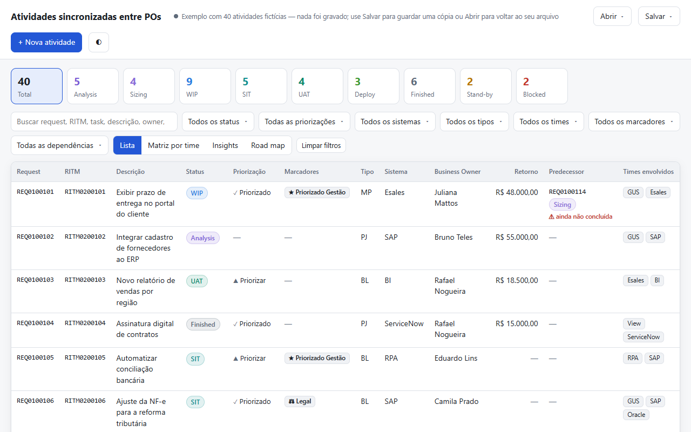
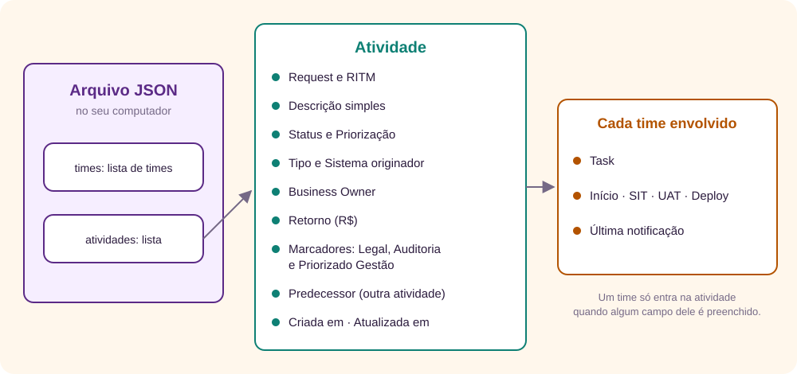
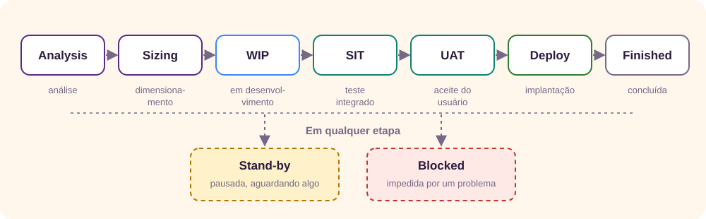
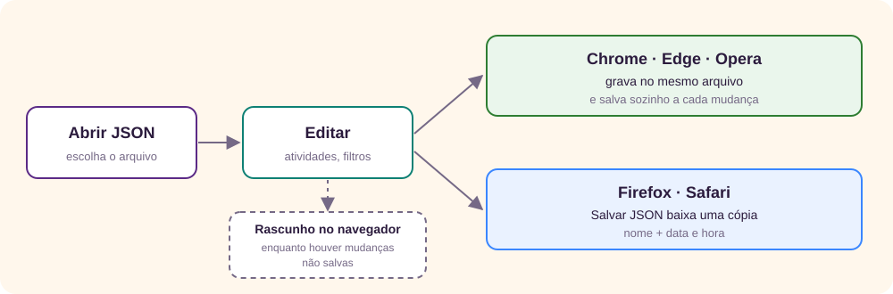
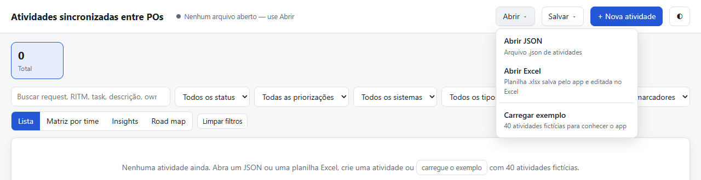
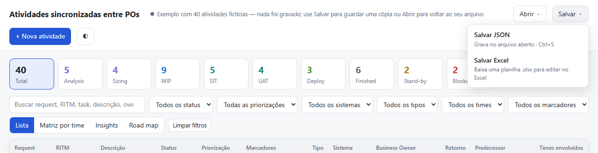
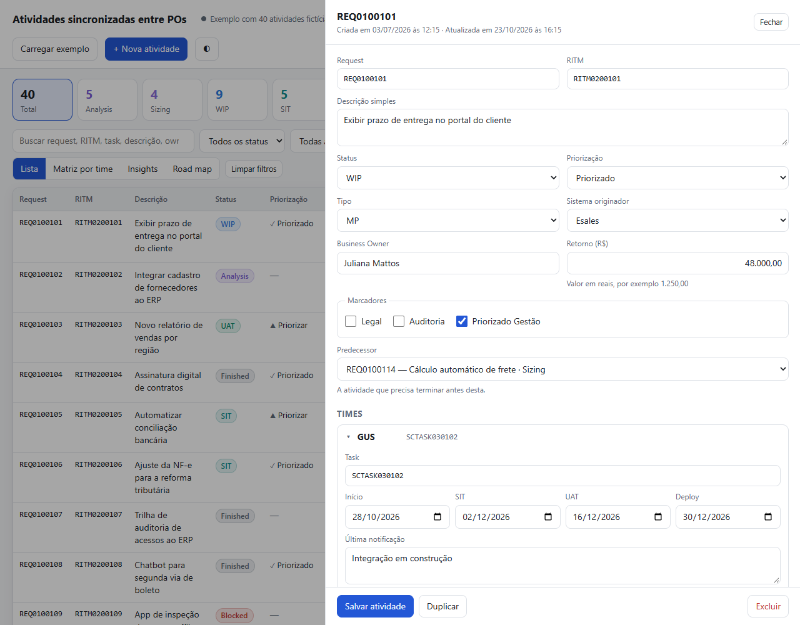
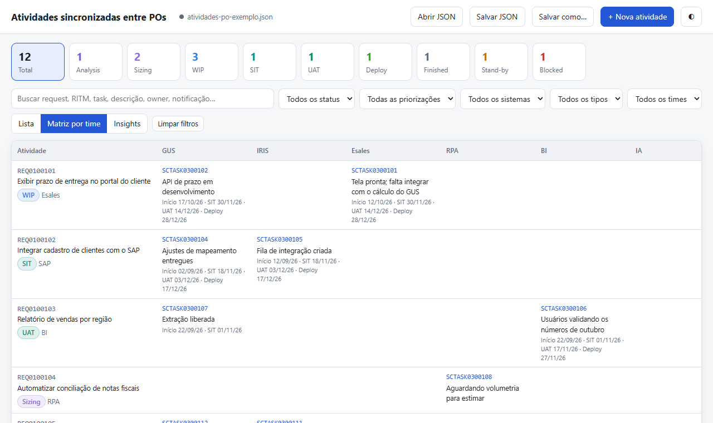
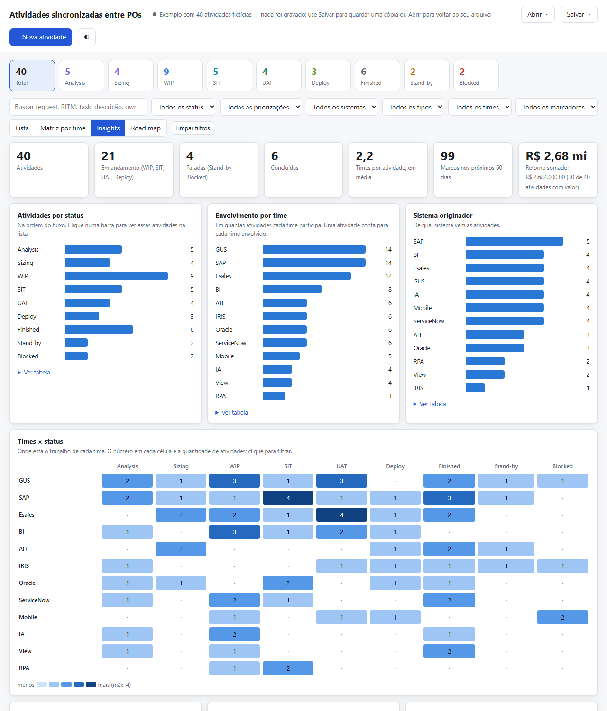
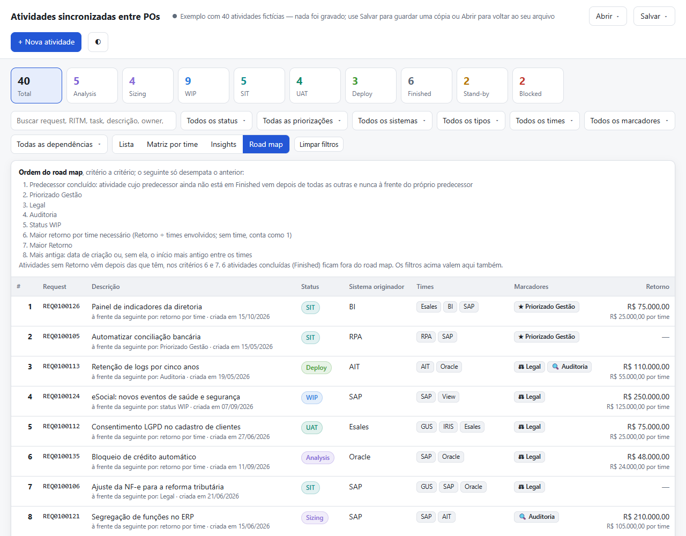

O app
Atividades entre POs é um app para quem coordena demandas que passam por vários times. Cada atividade guarda o request, o status, a priorização e o responsável de negócio e, para cada time envolvido, a task, as datas de início, SIT, UAT e deploy e a última notificação. A partir disso o app mostra uma lista com filtros, uma matriz por time, uma área de insights com gráficos e um road map com a ordem de prioridade. [1]
Abrir o app Atividades entre POs

Por que um app para isso
Quando uma demanda depende de três ou quatro times, cada time costuma ter a sua task, o seu prazo e o seu próprio jeito de registrar o andamento. A pergunta “em que pé está?” vira uma rodada de mensagens. O app junta essas informações num lugar só, com um registro por atividade e um bloco por time dentro dele.
Três perguntas guiam o desenho das telas:
- O que está parado? Os contadores e o filtro de status mostram Stand-by e Blocked de imediato.
- Quem depende de quem? A matriz por time mostra, numa grade, a task, as datas e a última notificação de cada time.
- Onde está o trabalho? Os insights cruzam times e status e apontam campos que ninguém preencheu.
Os dados
Tudo fica num arquivo JSON, um formato de texto simples e independente de linguagem de programação. [2] O arquivo tem duas listas: a dos times e a das atividades.

| Campo | O que guarda |
|---|---|
| Request e RITM | Os números do chamado e do item de requisição no sistema de chamados da empresa. |
| Descrição simples | Uma frase que qualquer pessoa entenda. |
| Status e Priorização | Em que etapa a atividade está e se ela deve ser priorizada. Veja a próxima seção. |
| Tipo | A classificação usada pela equipe: BL, MP ou PJ. |
| Sistema originador | O time ou sistema de onde a demanda veio. As opções são os próprios times. |
| Business Owner | A pessoa de negócio responsável pela demanda. |
| Marcadores: Legal, Auditoria, Priorizado Gestão | Três caixas de seleção, independentes entre si: uma atividade pode ter nenhuma, uma ou as três. Priorizado Gestão é separado do campo Priorização. Na Lista, a coluna Marcadores mostra as marcadas, com ícone e nome, e pode ser ordenada; na Matriz, elas aparecem abaixo do status. O filtro Todos os marcadores mostra só as atividades com o marcador escolhido, e a busca também encontra pelo nome do marcador. Em Insights, o gráfico Marcadores conta as atividades de cada um; clicar numa barra aplica o filtro. No JSON, os campos são legal, auditoria e priorizadoGestao, gravados como true só quando marcados. Ao abrir um arquivo, valores como "Sim", "x" ou 1 contam como marcado, e qualquer outro valor conta como desmarcado. |
| Retorno (R$) | O valor monetário de retorno da atividade, em reais. Digite como de costume, por exemplo 1.250,50, 1250,5 ou R$ 300; ao sair do campo, o app mostra o valor formatado. Um valor que não é número fica marcado em vermelho e a atividade só é salva depois de corrigido. Na Lista, a coluna Retorno pode ser ordenada; na Matriz, o valor aparece ao lado do status; em Insights, um indicador soma o retorno das atividades filtradas e diz quantas têm valor. No JSON, o campo retorno é gravado como número, com ponto decimal. Se um arquivo trouxer ali um texto que não é número, ele é mantido como veio e aparece na Lista como ⚠ inválido, até ser corrigido. |
| Predecessor | A atividade da lista que precisa terminar antes desta. Escolha em Predecessor ou deixe Nenhuma. A lista de opções esconde as atividades que já dependem desta, para não formar um ciclo, e a dica abaixo do campo mostra de quais atividades esta é predecessora. Na Lista, a coluna Predecessor traz o request e o status da predecessora, com ⚠ ainda não concluída quando esta atividade já está em WIP, SIT, UAT ou Deploy e a predecessora não chegou a Finished. Na Matriz, a mesma informação aparece abaixo da descrição. A busca também encontra a atividade pelo request da predecessora. Ao excluir uma atividade que é predecessora de outras, o campo delas fica vazio, e o app avisa antes. |
| Times | Para cada time envolvido: task, início, SIT, UAT, deploy e última notificação. |
| Criada em e Atualizada em | Registradas pelo próprio app quando você salva uma atividade nova ou altera uma existente. |
Os times disponíveis são GUS, IRIS, Esales, RPA, BI, IA, SAP, AIT, Mobile, Oracle, View e ServiceNow. Se o seu arquivo tiver outros times, eles continuam lá: o app junta a lista do arquivo com a dele.
↑ Voltar ao topoStatus e priorização
O status diz em que etapa a atividade está. A ordem abaixo é a mesma dos contadores, dos filtros e dos gráficos.

- WIP vem de work in progress, trabalho em andamento. [3]
- SIT é o teste integrado, que verifica o sistema completo funcionando junto com os outros sistemas. [4]
- UAT é o teste de aceite, feito pelo usuário final ou por um especialista do negócio para confirmar que a solução serve a ele. [5]
A priorização é independente do status e tem três valores: Priorizar (▲, pedir prioridade), Priorizado (✓, prioridade já concedida) e Esperando (⏸, aguardando decisão). Ela pode ficar vazia.
↑ Voltar ao topoAbrir e salvar
O jeito de salvar depende do navegador, porque abrir um arquivo e gravar de volta nele usa um recurso que só alguns navegadores oferecem. [6] [7] Pelas tabelas de compatibilidade consultadas, Chrome, Edge e Opera têm esse recurso; Firefox e Safari, não. [8] [9]

Os comandos de arquivo ficam em dois menus no topo da tela: Abrir e Salvar.


| Menu e item | Chrome, Edge e Opera | Firefox e Safari |
|---|---|---|
| Abrir › Abrir JSON | Abre o arquivo e pede permissão para gravar nele. | Abre o arquivo só para leitura. |
| Abrir › Abrir Excel | Importa uma planilha .xlsx exportada pelo app. Veja Planilha Excel. | |
| Abrir › Carregar exemplo | Carrega 40 atividades fictícias, sem gravar nada. | |
| Salvar › Salvar JSON (Ctrl+S) | Grava no arquivo aberto. Se o nome dele não começa com “Atividades entre POs” ou se nenhum arquivo foi aberto, pergunta onde criar um arquivo novo com esse nome, que passa a ser o arquivo aberto. Depois de cada alteração, o app também grava sozinho no arquivo aberto. | Baixa uma cópia. Substitua o arquivo antigo por ela. |
| Salvar › Salvar Excel | Baixa uma planilha .xlsx com os dados. Veja Planilha Excel. | |
Os arquivos que o app cria têm sempre o mesmo nome, “Atividades entre POs”, seguido da data e da hora no formato AAAAMMDD HHmmSS: por exemplo Atividades entre POs 20261126 105833.json e Atividades entre POs 20261126 105712.xlsx. Assim cada cópia fica identificada e fácil de achar na pasta de downloads.
Os menus também funcionam pelo teclado: com o foco em Abrir ou Salvar, Enter ou ↓ abre o menu, as setas para cima e para baixo percorrem os itens, as setas para os lados passam de um menu ao outro e Esc fecha. Com o painel de uma atividade aberto, Ctrl+S salva a atividade em vez do arquivo.
Enquanto houver mudanças não salvas, o app guarda um rascunho no armazenamento do navegador, que sobrevive ao fechamento da aba. [10] Ao reabrir a página, ele pergunta se você quer restaurar. O app não guarda o vínculo com o arquivo de uma visita para outra: depois de recarregar a página, abra o arquivo de novo em Abrir › Abrir JSON. O ponto ao lado do nome do arquivo mostra o estado: verde para salvo, amarelo para alterações pendentes.
↑ Voltar ao topoPlanilha Excel
Quem prefere editar muitas atividades de uma vez pode levar os dados ao Excel e trazê-los de volta. O app grava e lê arquivos .xlsx, o formato de planilha do Office Open XML, padronizado na norma ECMA-376. [11] Ele monta e lê a planilha sozinho, sem bibliotecas externas e sem enviar nada para servidores.
Salvar › Salvar Excel baixa a planilha, com quatro abas:
| Aba | O que tem |
|---|---|
| Atividades | Uma linha por atividade, com as colunas Request, RITM, Descrição, Status, Priorização, Tipo, Sistema originador, Business Owner, Retorno (R$), Legal, Auditoria, Priorizado Gestão, Predecessor (Request), Criado em e Atualizado em (automático). |
| Times | Uma linha por time envolvido numa atividade, com Request, Descrição (só leitura), Time, Task, Início, SIT, UAT, Deploy e Última notificação. |
| Listas | Os valores válidos de Status, Priorização, Tipo, Times e Marcadores. As colunas com esses campos nas outras abas oferecem a lista ao clicar na célula. |
| Leia-me | As regras de edição, a data e a hora da exportação e quantas atividades e participações de time a planilha tem. |
As duas primeiras abas têm o cabeçalho fixo e filtro em cada coluna. Ao editar, siga estas regras:
- O Request identifica a atividade e liga as abas Atividades e Times. Cada Request aparece uma única vez na aba Atividades. Se mudar um Request, mude também nas linhas da aba Times.
- Atividade nova: inclua uma linha em Atividades e use o mesmo Request nas linhas da aba Times.
- Datas em
dd/mm/aaaa. Retorno só com o número, em reais. - Legal, Auditoria e Priorizado Gestão: escreva Sim ou deixe em branco.
- Predecessor: o Request da atividade que precisa terminar antes.
- Não renomeie as abas nem os títulos das colunas. A ordem das colunas pode mudar.
Antes de exportar, se alguma atividade estiver sem Request ou com Request repetido, o app lista quais são e pergunta se quer continuar, porque na volta os times dessas atividades seriam ignorados. Sem nenhuma atividade, ele oferece uma planilha vazia, para usar como modelo.
Abrir › Abrir Excel traz a planilha de volta, e ela substitui os dados do app: linha incluída vira atividade nova, linha alterada atualiza a atividade e registra a data em Atualizado em, e linha apagada remove a atividade. Antes de aplicar, o app mostra um resumo e pede confirmação. Este é o resumo que ele mostrou num teste com o exemplo, depois de mudar um status, apagar uma linha e incluir uma atividade nova com uma data de SIT impossível:
Importar "Atividades entre POs 20261126 121727.xlsx"? A planilha tem 40 atividades: 1 nova, 2 alteradas, 37 sem alteração. 1 atividade atual não está na planilha e será removida. 2 avisos: • Times, linha 90: data de SIT "32/13/2026" não reconhecida (mantida como texto) • Atividades, linha 29: predecessor "REQ0100102" não encontrado; campo deixado vazio Depois, use Salvar › Salvar JSON para guardar.
A segunda atividade alterada é a que tinha como predecessora a linha apagada: o campo ficou vazio, como diz o aviso. Outros avisos possíveis: status ou priorização fora da lista (o valor é mantido), time que não existia (entra na lista de times), Request repetido e predecessor que formaria um ciclo. Se a planilha for igual aos dados atuais, o app diz que nada mudou. Se você cancelar, nada muda.
Depois de importar, salve: no Chrome, no Edge e no Opera, com um arquivo JSON aberto, o app grava nele sozinho; nos outros casos, use Salvar › Salvar JSON.
↑ Voltar ao topoRoteiro passo a passo
Este roteiro usa o exemplo embutido no app, com 40 atividades fictícias. Nada é gravado até você salvar.
- Abra o app, clique em Abrir e depois em Carregar exemplo. Os contadores mostram 40 atividades. Para experimentar o salvamento automático do Chrome e do Edge, use em vez disso o arquivo de exemplo com Abrir › Abrir JSON.
- Clique no contador WIP. A lista fica com as 9 atividades em desenvolvimento. Clique em Total para voltar.
- Clique no filtro Todas as priorizações e marque Priorizar. Restam 10 atividades. Marque também Sem priorização: passam a ser 17, porque dentro de um filtro vale qualquer opção marcada. Clique em Limpar filtros.
- Clique no filtro Todos os marcadores e marque Legal. Restam 5 atividades, todas com o selo ⚖ Legal na coluna Marcadores. Clique em Limpar filtros.
- Clique na linha REQ0100101. O painel mostra o Retorno de R$ 48.000,00, o marcador Priorizado Gestão e a predecessora REQ0100114. Clique em GUS para ver a task e as datas desse time.
- Mude a Priorização para Esperando e clique em Salvar atividade. Reabra a atividade: a data de atualização mudou.
- Clique em + Nova atividade, preencha o Request, escolha Status, Tipo e Sistema originador, digite um Retorno, abra o time BI, preencha a task e uma data de SIT e salve. A atividade aparece no topo da lista.
- Clique em Matriz por time e localize a nova atividade na coluna BI.
- Clique em Insights. No mapa Times × status, clique numa célula: o app volta para a lista com o time e o status filtrados.
- Clique em Road map. A primeira posição é a REQ0100126, que tem Priorizado Gestão. A REQ0100101, também Priorizado Gestão e em WIP, aparece entre as últimas, com ⚠ aguarda o predecessor REQ0100114 (Sizing), logo depois da própria REQ0100114. Abaixo de cada descrição, o app diz qual critério decidiu a posição.
- Clique em Salvar › Salvar Excel. O navegador baixa a planilha
Atividades entre POs AAAAMMDD HHmmSS.xlsx. - Abra a planilha no Excel. Na aba Atividades, mude o Status da REQ0100101 para SIT e salve no formato .xlsx.
- No app, clique em Abrir › Abrir Excel e escolha a planilha. O resumo diz “A planilha tem 41 atividades: 0 novas, 1 alterada, 40 sem alteração”; confirme. Na lista, a REQ0100101 aparece em SIT.
- Clique em Salvar › Salvar JSON para guardar uma cópia com data e hora no nome.
A lista e os filtros
No topo ficam os contadores, um por status, com o total à esquerda. Clicar num contador filtra a lista por aquele status.
Abaixo vêm a busca e os filtros. A busca procura em request, RITM, descrição, status, priorização, sistema, business owner, tipo, request da predecessora, nome dos marcadores e, dentro dos times, em task e notificação. Os filtros são status, priorização (com a opção Sem priorização), sistema, tipo, time, marcador e dependência. O filtro Todas as dependências tem as opções Aguarda o predecessor (o predecessor ainda não está em Finished), Com predecessor, Sem predecessor e É predecessora de outra. Cada filtro abre uma lista de caixas de seleção, e dá para marcar duas ou mais opções. Dentro de um filtro vale qualquer opção marcada: WIP e Blocked mostram as atividades em um ou outro status. Entre filtros diferentes valem todas as condições. Com mais de uma opção marcada, o botão mostra quantas, como Status: 2 selecionados, e o item Todos os status no fim da lista desmarca só aquele filtro. Com o teclado, ↓ abre a lista, Espaço marca e Esc fecha. Os filtros valem para a lista, para a matriz, para os insights e para o road map.
Clique no título de uma coluna para ordenar, e de novo para inverter. Status segue a ordem do fluxo; priorização segue Priorizar, Priorizado, Esperando, com as vazias sempre por último. Com um time filtrado, aparece uma coluna com a última notificação daquele time.
↑ Voltar ao topoO painel da atividade
Clicar numa linha abre o painel de edição à direita. + Nova atividade abre o mesmo painel vazio.

- Status, Priorização, Tipo e Sistema originador são listas de opções. Um valor antigo que não está na lista aparece no fim dela, para não se perder.
- Os times começam recolhidos. Clique no nome para abrir; a task aparece ao lado do nome mesmo com o bloco fechado.
- Um time só é gravado na atividade quando algum campo dele é preenchido.
- Salvar atividade registra a data de criação numa atividade nova e a de atualização quando algo mudou. Salvar sem mudar nada mostra “Nenhuma alteração”.
- Duplicar cria uma cópia como atividade nova. Excluir pede confirmação. Esc fecha o painel.
A matriz por time
A matriz põe as atividades nas linhas e os times nas colunas. Cada célula mostra a task, a última notificação e as datas daquele time. Só aparecem os times que participam de alguma atividade da lista filtrada.

Insights
A área de insights resume as atividades da lista filtrada em indicadores e gráficos. Os números são contagens do arquivo aberto: o app não estima nada.

| Gráfico | O que responde |
|---|---|
| Indicadores | Quantas atividades há, quantas estão em andamento (WIP, SIT, UAT, Deploy), paradas (Stand-by, Blocked) e concluídas, a média de times por atividade e os marcos dos próximos 60 dias. |
| Atividades por status | Como as atividades se distribuem no fluxo. |
| Envolvimento por time | Em quantas atividades cada time participa. |
| Times × status | Em que etapa está o trabalho de cada time. Células mais escuras têm mais atividades. |
| Sistema originador e Tipo | De onde vêm as demandas e de que tipo são. |
| Times por atividade | Quantas atividades envolvem 1, 2, 3 ou mais times. |
| Preenchimento dos dados | Que parte das participações de time tem task, datas e notificação preenchidas. |
| Business Owners | Os oito responsáveis com mais atividades. |
| Retorno somado | A soma do Retorno das atividades filtradas, abreviada no número grande (por exemplo R$ 2,68 mi) e completa na legenda, com quantas atividades têm valor. |
| Marcadores | Quantas atividades têm cada marcador: Legal, Auditoria e Priorizado Gestão. |
| Próximos marcos e Abertas há mais tempo | As datas dos próximos 60 dias e as atividades não concluídas com o início mais antigo. |
Clique numa barra ou numa célula para ir à lista com aquele filtro. Passe o mouse ou use Tab para ver o número e o percentual, e abra Ver tabela em cada gráfico para ler os valores sem o gráfico.
↑ Voltar ao topoRoad map
A área Road map põe as atividades não concluídas numa ordem de prioridade. Cada critério só desempata o anterior:

- predecessor concluído: atividade cujo predecessor ainda não está em Finished vem depois de todas as outras, mesmo com Priorizado Gestão, e nunca à frente do próprio predecessor;
- Priorizado Gestão;
- Legal;
- Auditoria;
- status WIP;
- maior retorno por time necessário: o Retorno dividido pelo número de times envolvidos (sem time, conta como 1), o que favorece valor alto com poucos times;
- maior Retorno;
- mais antiga: a data de criação ou, sem ela, o início mais antigo entre os times.
Atividades sem Retorno vêm depois das que têm, nos critérios 6 e 7, e as que estão em Finished ficam fora. Abaixo da descrição de uma atividade bloqueada aparece ⚠ aguarda o predecessor, com o request e o status dele; quando o predecessor passa a Finished, ela volta a disputar posição pelos outros critérios. A tabela traz posição, Request, Descrição, Status, Sistema originador, Times, Marcadores e Retorno; quando há mais de um time, o retorno por time aparece abaixo do valor. Abaixo de cada descrição, o app diz qual critério pôs a atividade à frente da seguinte. Os filtros valem também aqui. Clique numa linha, ou chegue a ela com Tab e tecle Enter, para abrir a atividade.
A ordem é uma sugestão a partir dos campos preenchidos. Retorno em branco ou desatualizado muda a posição, então revise os valores antes de levar o road map a uma reunião.↑ Voltar ao topo
Erros comuns
Editar no Firefox e esquecer a cópia
No Firefox e no Safari, Salvar JSON baixa um arquivo novo. Se você continuar abrindo o antigo, as mudanças somem. Substitua o arquivo antigo pela cópia baixada.
Esperar salvamento automático sem arquivo
O app só grava sozinho depois que um arquivo foi aberto ou salvo com permissão. Antes disso, as mudanças ficam só no rascunho do navegador.
Insights vazios por falta de datas
Próximos marcos e Abertas há mais tempo dependem das datas dos times. Confira o gráfico Preenchimento dos dados para ver o que falta.
Esquecer os filtros ligados
Os filtros valem para a lista, a matriz e os insights. Se um número parecer baixo, veja a linha “N de M atividades” e clique em Limpar filtros.
Apagar linhas da planilha para “esconder” atividades
A planilha substitui os dados do app. Uma linha apagada na aba Atividades remove a atividade ao importar. Para ver menos linhas no Excel, use o filtro das colunas em vez de apagar.
Mudar o Request só numa aba
O Request liga a aba Times à aba Atividades. Se ele mudar só em Atividades, as linhas dos times ficam sem atividade e o app as ignora, com um aviso no resumo.
Importar uma planilha antiga
Importar traz de volta os dados como estavam na hora da exportação. O que foi alterado no app depois disso se perde. Exporte de novo antes de editar no Excel.
Para fixar
- Os dados ficam num arquivo JSON no seu computador.
- No Chrome, no Edge e no Opera o app grava no mesmo arquivo; no Firefox e no Safari, baixa uma cópia.
- A planilha do Excel vai e volta pelos menus Salvar e Abrir e, ao voltar, substitui os dados do app.
- Um time só entra na atividade quando algum campo dele é preenchido.
- Os filtros valem para a lista, a matriz e os insights.
Idioma da interface
A interface do app está em português. A tabela traz os botões e rótulos principais nos quatro idiomas deste tutorial.
| No app | English | Italiano | Español |
|---|---|---|---|
| Abrir · Salvar | Open · Save | Apri · Salva | Abrir · Guardar |
| Abrir JSON · Abrir Excel | Open JSON · Open Excel | Apri JSON · Apri Excel | Abrir JSON · Abrir Excel |
| Salvar JSON · Salvar Excel | Save JSON · Save Excel | Salva JSON · Salva Excel | Guardar JSON · Guardar Excel |
| Atividades · Times · Listas · Leia-me (abas da planilha) | Activities · Teams · Lists · Read me (spreadsheet tabs) | Attività · Team · Elenchi · Leggimi (fogli della cartella) | Actividades · Equipos · Listas · Léame (hojas de la planilla) |
| + Nova atividade | + New activity | + Nuova attività | + Nueva actividad |
| Carregar exemplo | Load sample | Carica esempio | Cargar ejemplo |
| Lista · Matriz por time · Insights | List · Matrix by team · Insights | Elenco · Matrice per team · Insights | Lista · Matriz por equipo · Insights |
| Limpar filtros | Clear filters | Azzera filtri | Limpiar filtros |
| Priorização: Priorizar · Priorizado · Esperando | Prioritization: Prioritize · Prioritized · Waiting | Priorità: Da priorizzare · Priorizzata · In attesa | Priorización: Priorizar · Priorizado · Esperando |
| Sistema originador | Originating system | Sistema di origine | Sistema de origen |
| Road map · Ordem do road map · à frente da seguinte por · por time | Road map · Road map order · ahead of the next one by · per team | Road map · Ordine del road map · davanti alla successiva per · per team | Road map · Orden del road map · delante de la siguiente por · por equipo |
| Status: 2 selecionados | Status: 2 selected | Status: 2 selezionati | Status: 2 seleccionados |
| Todas as dependências · Aguarda o predecessor · Com predecessor · Sem predecessor · É predecessora de outra | All dependencies · Waiting for the predecessor · Has a predecessor · No predecessor · Is the predecessor of another | Tutte le dipendenze · In attesa del predecessore · Con predecessore · Senza predecessore · È predecessore di un'altra | Todas las dependencias · Espera a la predecesora · Con predecesora · Sin predecesora · Es predecesora de otra |
| predecessor concluído · aguarda o predecessor · é a predecessora dela | predecessor finished · waiting for the predecessor · it is its predecessor | predecessore concluso · in attesa del predecessore · è la sua predecessora | predecesora terminada · espera a la predecesora · es su predecesora |
| Marcadores · Legal · Auditoria · Priorizado Gestão · Todos os marcadores | Flags · Legal · Audit · Prioritized by management · All flags | Contrassegni · Legale · Audit · Prioritaria per la direzione · Tutti i contrassegni | Marcadores · Legal · Auditoría · Priorizado por la gerencia · Todos los marcadores |
| Retorno (R$) · Retorno somado · ⚠ inválido | Return (R$) · Total return · ⚠ invalid | Ritorno (R$) · Ritorno totale · ⚠ non valido | Retorno (R$) · Retorno sumado · ⚠ inválido |
| Predecessor · Nenhuma · ⚠ ainda não concluída | Predecessor · None · ⚠ not finished yet | Predecessore · Nessuna · ⚠ non ancora conclusa | Predecesora · Ninguna · ⚠ aún no terminada |
| Última notificação | Latest update note | Ultima notifica | Última notificación |
| Salvar atividade · Duplicar · Excluir · Fechar | Save activity · Duplicate · Delete · Close | Salva attività · Duplica · Elimina · Chiudi | Guardar actividad · Duplicar · Eliminar · Cerrar |
| Ver tabela | Show table | Mostra tabella | Ver tabla |
Revisão rápida
Tente responder antes de abrir cada pergunta.
1. Onde ficam os dados das atividades?
Num arquivo JSON no seu computador. O app não envia nada para servidores; o navegador guarda só um rascunho enquanto houver mudanças não salvas.
2. Você editou no Firefox e clicou em Salvar JSON. O que aconteceu com o arquivo original?
Nada. O Firefox baixou uma cópia nova, com data e hora no nome. Use essa cópia no lugar da antiga.
3. Uma atividade está parada esperando outro time. Qual status usar?
Stand-by, se ela está em pausa aguardando algo; Blocked, se um problema impede o avanço.
4. Por que um time aberto no painel não aparece na matriz depois de salvar?
Porque nenhum campo dele foi preenchido. O time só entra na atividade quando tem task, data ou notificação.
5. O gráfico Abertas há mais tempo está vazio. Por quê?
Ele usa a data de início dos times. Sem datas de início preenchidas, não há como calcular há quanto tempo a atividade está aberta.
6. Você apagou uma linha na aba Atividades da planilha e importou. O que acontece com a atividade?
Ela é removida do app. O resumo antes da importação avisa quantas atividades serão removidas, e você pode cancelar.
7. Como o app sabe a que atividade pertence uma linha da aba Times?
Pelo Request. Ele precisa ser igual nas duas abas e aparecer uma única vez na aba Atividades.
8. Uma atividade com Priorizado Gestão aparece no fim do road map. Por quê?
Porque o predecessor dela ainda não está em Finished. Esse é o primeiro critério da ordem: ela só sobe quando o predecessor for concluído.
Referências
- Giovani Perotto Mesquita, “Atividades entre POs”, app em um único arquivo HTML, giovanipm.github.io/atividades-po.html.
- T. Bray (ed.), “The JavaScript Object Notation (JSON) Data Interchange Format”, RFC 8259, IETF, dezembro de 2017, datatracker.ietf.org/doc/html/rfc8259.
- Wikipedia (em inglês), “Work in process”, acesso em 21/11/2026, en.wikipedia.org/wiki/Work_in_process. O verbete trata o termo na produção e na contabilidade; o uso para tarefas em andamento é uma extensão comum dele.
- Wikipedia (em inglês), “System integration testing”, acesso em 21/11/2026, en.wikipedia.org/wiki/System_integration_testing.
- Wikipedia (em inglês), “Acceptance testing”, acesso em 21/11/2026, en.wikipedia.org/wiki/Acceptance_testing.
- MDN Web Docs, “Window: showOpenFilePicker() method”, acesso em 21/11/2026, developer.mozilla.org/en-US/docs/Web/API/Window/showOpenFilePicker. Recurso experimental, de disponibilidade limitada.
- MDN Web Docs, “Window: showSaveFilePicker() method”, acesso em 21/11/2026, developer.mozilla.org/en-US/docs/Web/API/Window/showSaveFilePicker.
- Can I use, “File System Access API”, acesso em 21/11/2026, caniuse.com/native-filesystem-api. Suporte completo no Chrome e no Edge a partir da versão 105 e no Opera a partir da 91; sem suporte no Firefox e no Safari. Marca o Chrome para Android como sem suporte.
- Chrome for Developers, documentação da File System Access API, publicada em 19/08/2024, acesso em 21/11/2026, developer.chrome.com/docs/capabilities/web-apis/file-system-access. Diz que a API funciona na maioria dos navegadores Chromium, inclusive no Android, o que diverge do Can I use [8] para o Android. O app não foi testado em celular.
- MDN Web Docs, “Window: localStorage property”, acesso em 21/11/2026, developer.mozilla.org/en-US/docs/Web/API/Window/localStorage. Em janelas anônimas, os dados são apagados quando a última aba anônima é fechada.
- Ecma International, “ECMA-376: Office Open XML file formats”, 5ª edição (partes de dezembro de 2015 a dezembro de 2021), acesso em 26/11/2026, ecma-international.org/publications-and-standards/standards/ecma-376/. Equivale à norma ISO/IEC 29500. A página da norma não cita o .xlsx pelo nome; a planilha é um dos vocabulários do Office Open XML descritos na parte 1.
- MDN Web Docs, “DecompressionStream: DecompressionStream() constructor”, e os dados de compatibilidade do MDN (browser-compat-data), acesso em 26/11/2026, developer.mozilla.org/en-US/docs/Web/API/DecompressionStream/DecompressionStream. O formato
deflate-rawaparece a partir do Chrome e do Edge 103, do Firefox 113 e do Safari 16.4.